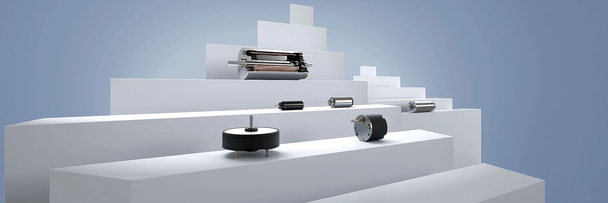

FAULHABER ouvre de nouvelles perspectives à la robotique de précision
De O.Abdelwahd · Publié le 13 octobre 2025

FAULHABER est une entreprise reconnue pour ses micromoteurs de haute précision : moteurs DC sans balais, servomoteurs et moteurs pas à pas. Ces moteurs sont largement utilisés dans la médecine, l’aéronautique, l’automatisation industrielle et, plus particulièrement, en robotique, où la miniaturisation et la fiabilité de l’entraînement permettent de concevoir des robots plus compacts, précis et économes en énergie — qu’il s’agisse de bras robotiques chirurgicaux, de drones ou d’humanoïdes. FAULHABER s’impose ainsi comme un acteur clé dans la chaîne technologique de la robotique moderne.
En septembre, FAULHABER a annoncé avoir enrichi sa gamme de micromoteurs à courant continu avec l’introduction de deux nouvelles séries : la GXR 1437, à commutation cuivre-graphite, et la SXR 1424 / 1437, à commutation métal précieux.
Ces moteurs répondent à une évolution majeure de la robotique moderne : l’entrée dans l’ère de la précision et de la dextérité. En intégrant ses moteurs à faible inertie et haut rendement, FAULHABER contribue directement au contrôle très fin des articulations ainsi qu’à la fluidité et à la durabilité des mouvements robotiques.
Pensés pour offrir fiabilité, souplesse d’intégration et performances maximales dans un format ultracompact, ils mesurent seulement 14 mm de diamètre, ce qui les rend idéaux pour les environnements restreints.
« Avec ces nouveaux moteurs de 14 mm, les utilisateurs n’ont plus à choisir entre compacité, fonctionnalité et performance. En combinaison avec le réducteur 14GPT et le codeur IEP3, parfaitement assortis, on obtient une solution complète au diamètre unifié, garantissant une efficacité optimale et une dynamique maximale. » — Dario Del Favero, Chef de produit FAULHABER
Les moteurs GXR et SXR reflètent le savoir-faire d’ingénierie de FAULHABER : compacts, robustes et entièrement personnalisables. Leur bobinage hexagonal innovant maximise la densité de puissance pour des performances élevées dans un format minimal. Conçus pour s’adapter à divers environnements, ils offrent plusieurs options de roulements, tensions et connexions, ainsi qu’un équilibrage de rotor précis garantissant une stabilité exemplaire. Conformes à la directive RoHS, ils s’imposent naturellement dans les applications où précision et fiabilité sont essentielles.
Grâce à leur conception modulaire et à leur capacité d’intégration sur mesure, les séries GXR et SXR ouvrent la voie à une nouvelle génération d’entraînements miniaturisés, alliant compacité, dynamisme et fiabilité à long terme.
Des moteurs pensés pour propulser chaque domaine d’innovation
Des salles d’opération aux fonds marins, les technologies d’entraînement FAULHABER s’imposent comme une référence incontournable dans la robotique de précision. Leur savoir-faire en miniaturisation, efficacité énergétique et contrôle du mouvement place leurs moteurs au cœur des innovations les plus avancées.
Les micromoteurs FAULHABER équipent de nombreux systèmes critiques : pompes à perfusion, robots chirurgicaux multiaxiaux et dispositifs d’assistance médicale. L’un de leurs projets les plus emblématiques est la main bionique Bebionic, conçue en partenariat avec Ottobock. Chaque doigt y est animé par un moteur FAULHABER, permettant une motricité fine, fluide et naturelle.
Les moteurs de la famille SXR s’avèrent particulièrement adaptés à ce type d’application exigeante grâce à leur géométrie d’enroulement innovante, leurs aimants en terres rares haute performance et leurs réducteurs planétaires de précision.
Les mêmes qualités de précision et de stabilité mécanique font des moteurs FAULHABER des composants prisés dans les systèmes optiques scientifiques, notamment les télescopes d’observation et les instruments de mesure de haute résolution.
FAULHABER a également contribué au projet “Belle”, un robot d’exploration sous-marine développé en 2023 par les étudiants en ingénierie mécanique de l’ETH Zurich. Au cœur du robot, un moteur FAULHABER assure la propulsion et la stabilité dans les profondeurs, démontrant la résistance et la polyvalence de ces solutions dans des conditions extrêmes.
La précision au service du progrès
Derrière les grands robots qui captivent l’imaginaire collectif, la véritable prouesse de la robotique se joue souvent dans les détails invisibles. C’est là que FAULHABER excelle, en développant des moteurs capables de combiner miniaturisation, précision, efficacité énergétique et robustesse.
Qu’il s’agisse d’une main bionique, d’un instrument chirurgical ou d’un explorateur marin, ces micro-entraînements constituent le cœur battant de la robotique moderne, là où la puissance se mesure à l’échelle du micron.